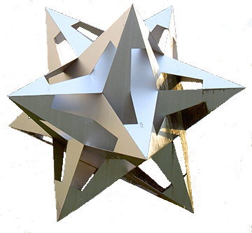

Geometría analítica
del espacio

INTERACTIVO
GEOMETRÍA ANALÍTICA DEL ESPACIO
INTERACTIVO
Elena Esperanza Álvarez Sáiz
María José García Cebrian
Red Educativa Digital Descartes, España
Fondo Editorial Pascual Bravo
Medellín
Título de la obra
Geometría analítica del espacio
Elena Esperanza Álvarez Sáiz
María José García Cebrian
Primera edición: 2019
Diseño del libro: Juan Guillermo Rivera Berrío
Diseño de cubierta: Diana María Velásquez García
Librería turn.js: Emmanuel García
Herramienta de edición: DescartesJS
Fuente: Amaranth
Fondo Editorial Pascual Bravo
Calle 73 73A-226
PBX: (574) 4480520
Apartado 6564
Medellín, Colombia
www.pascualbravo.edu.co

Esta obra está bajo una licencia Creative Commons 4.0 internacional: Reconocimiento-No Comercial-Compartir Igual.
Todos los objetos interactivos y los contenidos de esta obra colectiva están protegidos por la Ley de Propiedad Intelectual.
Tabla de contenido
1.1. Vector fijo y vector libre6
1.3. Operaciones. Combinación lineal8
1.4. Dependencia e independencia lineal. Base.10
3.1. Área de un paralelogramo19
1. Sistema de referencia y puntos en el espacio31
1.1. Punto medio de un segmento31
3.2. Ecuación normal del plano36
iii
3.3. Ejes y planos coordenados38
4.1. Posiciones relativas de dos rectas en el espacio39
4.2. Posiciones relativas de dos planos41
4.3. Posiciones relativas de tres planos43
4.4. Posiciones relativas de una recta y un plano45
6.2. Haz de planos paralelos54
1.1. Ángulos entre rectas y planos62
1.2. Rectas y planos perpendiculares65
2.1. Distancia de un punto a una recta y a un plano69
2.2. Distancia entre dos planos71
2.3. Distancia entre una recta y un plano72
2.4. Distancia entre dos rectas73
iv
Prólogo
¿Quién soy?, ¿dónde estoy?, ¿hacia dónde voy?... ¡No!, ¡no te has equivocado de libro!, éste no es un libro de autoayuda, aunque también, es un libro de Matemáticas que busca dar respuesta a esas preguntas o más bien que quiere contribuir a que tú seas capaz de darlas.
Bueno, la primera pregunta quizás sea demasiado existencial, aunque de partida René Descartes al ligar la existencia al raciocinio ―”pienso luego existo”― nos facilitó al menos la consciencia de nuestro ser, si bien Shakespeare ―”ser o no ser”― ahondó en nuestra pesadumbre y, por ello, quizás debamos bordearla y simplemente poner de manifiesto cómo, al contemplar la inmensidad del Universo en el que vivimos, con seguridad en algún momento nos hemos sentido como seres puntuales, es decir, entes asimilables al objeto geométrico más simple: ¡El punto! Pero, ¿qué es un punto? Euclides lo define como “lo que no tiene parte”. Pero si no tiene parte, no existe, no es. Nuestros sentidos requieren un ancho y un largo, aunque sea muy pequeñito, para poder ver, oír, oler, saborear o palpar cualquier objeto, sin embargo... mi mente ¡lo ve!, ¡sí, lo veo!, las limitaciones de mi cuerpo biológico no son capaces de refrenar a mi intelecto y soy capaz de introducirme en un hipertúnel que me conduce a un mundo que denominamos matemático ―de μαθηματικóς: amante del conocimiento― un mundo ideal, no tangible, pero que cuando lo necesite podré desvirtualizar pasando del mundo abstracto al concreto, del mundo adimensional a la yocto-yotta realidad1.
De acuerdo, ya sé quien soy ―parafraseando a Sócrates: “solo sé que no soy nada”― y de nuevo es Cartesius quien nos orienta y ubica en nuestro contexto, quien sitúa un sistema de referencia, obviamente denominado cartesiano, y me permite ubicarme, me otorga una posición, es como un estar sin ser, ocupo un lugar en el mundo geométrico sin tener dimensión…, y, a su vez, me permite identificar de manera unívoca cada uno de los caminos por los que puedo optar para desplazarme; caminos curvos que sólo tienen longitud, pero no anchura, y además, entre ellos identifico a aquellos que son más condescendientes conmigo, que me ahorran energía, y me permiten llegar con menor recorrido, esos que intuitivamente son elegidos tanto por legos como profanos y que son conocidos como rectos.
vii
¡Oh! adorada línea recta que siempre sigues a mi mirada sin desviarse un ápice de mi objetivo, que me indicas y marcas la dirección hacia la que voy. ¡Oh! linda geometría euclidiana en la que si esa dirección que sigo se encuentra con un obstáculo, un bello monte por ejemplo, su empecinamiento director me fuerza... a construir ¡un túnel! ¿Cómo?... Vaya, ¡se me cayeron los palos del sombrajo! Pero no, no ha de verse de esa perspectiva pesimista, la construcción de la geometría euclídeo-cartesiana, la geometría analítica, me permite primero ascender a la perfección construyendo una utopía en la que desarrollar el pensamiento y el razonamiento y, a su vez, desde la comprensión teórica poder posteriormente descender a nuestra yocto-yotta realidad y resolver problemas de nuestro entorno en los que aparecen otros condicionantes, otras variables que hay que contemplar e integrar en nuestro modelo final.
Eso es lo que acontece, por ejemplo, cuando se quieren abordar arduas tareas como la que en su momento se plantearon al proyectar la construcción del túnel bajo el Canal de la Mancha o, en general, en cualquier proyecto de ingeniería que ha de enfrentarse a un mundo lleno de obstáculos que hay que salvar. Ni aun abordando la costosa construcción de un túnel este puede ser recto, pues ha de contemplar cuestiones geológicas de dureza o resistencia del terreno sobre el que hay que cavar y evitar aquellas que puedan ocasionar filtraciones que lo puedan inundar. O si queremos tardar lo menos posible, la mitad de tiempo, hemos de avanzar desde los dos extremos para encontrarnos en el punto medio y tendremos que usar muy bien la geometría analítica para tener la certeza de que nos vamos a encontrar en el sitio previsto y evitar que, si eso no aconteciese, construyamos dos túneles en lugar de uno. Los constructores del túnel del Canal de la Mancha se desviaron menos de medio metro, ¡todo un éxito geométrico-científico!
A continuación se presentan dos vídeos. El primero es un vídeo breve (dos minutos) para que te ubiques en el contexto y objetivo de ese proyecto.
Pero más interesante es el siguiente. ¡Prepara tus palomitas y disfruta con el éxito de la Matemática y de la Ciencia! Cincuenta minutos vibrantes que no quedan minorados por una resolución de imagen que desde la perspectiva actual sería mejorable. Si tienes poco tiempo te sugiero avanzar al minuto diez y ver al menos cuatro minutos.
viii
En definitiva el libro que está entre tus manos o siendo más precisos, dado su carácter digital e interactivo, el libro en el que te estás adentrando y con el que aprenderás gracias a la acción de tus dedos tiene el objetivo de catapultarte a la compresión de los fundamentos de la Geometría analítica tridimensional como base constructiva de micro y de megaproyectos como el antes citado. A través de sus tres partes o capítulos las autoras, grandes expertas en el desarrollo de recursos educativos interactivos con Descartes, nos enseñan de manera directa y concisa y con una edición y composición estética envidiable, a identificar los objetos geométricos básicos: el punto, la recta y el plano, a distinguir respectivamente unos de otros a través de sus coordenadas y ecuaciones; a localizar e interpretar las posiciones relativas que ocupan entre sí, a abordar la medición de ángulos, distancias, áreas y volúmenes, y a resolver problemas que puedan modelizarse en base a estos objetos. Y todo se alcanza mediante el uso de los vectores y el cálculo vectorial que es una herramienta matemática de gran potencia y que podemos visualizar como una sublimación de la tradicional regla y el compás euclidianos. Todo vector nos da una dirección, es nuestra regla, el producto escalar y vectorial actúa como compás y, en particular, cual escuadra o cartabón traza direcciones ortogonales. Adicionalmente, nos permite calcular distancias, áreas y volúmenes.
Los contenidos de este libro cubren el currículo de Geometría tridimensional establecido por la universidades españolas en sus procesos selectivos y puede servir como guía preparatoria de la prueba de acceso a las mismas, es por ello que las autoras han optado por incluir un apéndice en el que se aportan algunos ejercicios modelo.
Te auguro un aprendizaje óptimo y te animo a apoyarte en todas las escenas interactivas para que sea un aprendizaje significativo y que en un futuro próximo puedas embarcarte en grandiosos y bellos proyectos que contribuyan a construir una sociedad mejor y más justa.
En Córdoba, a 24 de marzo de 2019
José R. Galo Sánchez
x
parte i
Vectores
Elena E. Álvarez Sáiz
María José García Cebrian
Introducción
Muchas de las cantidades que manejamos, como la temperatura, el tiempo, el número de alumnos de un aula, etc, quedan perfectamente definidas por un número real y la unidad correspondiente.
Sin embargo, hay otras cantidades para las que es necesario establecer, además de su magnitud, la dirección y su sentido.
Las magnitudes que quedan completamente especificadas mediante un número con la unidad apropiada se llaman escalares. Aquellas que deben ser especificadas mediantes su magnitud, dirección y sentido se llaman vectoriales.
En este tema trabajaremos con las magnitudes vectoriales viendo cómo es posible operar con ellas. Pretendemos alcanzar los siguientes objetivos:
- Representar vectores fijos y libres en el espacio.
- Sumar, restar y multiplicar por un escalar vectores libres.
- Determinar si dos o tres vectores son dependientes o independientes.
- Calcular las coordenadas de un vector respecto de una base dada.
- Calcular y expresar analíticamente el producto escalar, vectorial y mixto de vectores.
- Aplicar el producto escalar, vectorial y mixto de vectores a la determinación de ángulos áreas y volúmenes.
3
1. El espacio IR3
El conjunto IR3 está formado por todas las ternas ordenadas de números reales, es decir, por los elementos (x, y, z) siendo x, y, z números reales. Es importante el orden en el que figuran los elementos, ya que la terna (1, 2, 3) no es la misma que la (3, 2, 1).
5
1.1. Vector fijo y vector libre
6
1.2. Módulo
7
1.3. Operaciones. Combinación lineal
8
9
1.4. Dependencia e independencia lineal. Base
Un conjunto de vectores se dice linealmente dependiente si alguno de ellos se puede poner como combinación lineal de los demás. Cuando no es posible, el conjunto de vectores se dice que es linealmente independiente.
Cuando un conjunto de vectores es linealmente independiente y, además, cualquier vector en el espacio se puede poner como combinación lineal de ellos se dice que forman una base.
10
En IR3 tres vectores linealmente independientes forman una base. Por ejemplo, el conjunto de vectores { i , j , k } con i = (1,0,0), j = (0,1,0), k = (0,0,1) forman una base, recibe el nombre de base canónica.
11
12
2. Producto escalar
2.1. Vectores ortogonales
13
14
15
17
3. Producto vectorial
18
3.1. Área de un paralelogramo
19
21
4. Producto mixto
22
23
parte ii
El espacio afín
María José García Cebrian
Introducción
En esta parte se estudian de forma interactiva rectas y planos en el espacio, sus ecuaciones y posiciones relativas. Se pretenden alcanzar los siguientes objetivos:
- Conocer las distintas formas de expresar la ecuación de una recta en el espacio.
- Reconocer y determinar las distintas formas de expresar la ecuación de un plano.
- Reconocer las ecuaciones de los ejes y planos coordenados.
- Analizar las posiciones relativas de dos rectas en el espacio.
- Determinar las posiciones relativas de dos y tres planos en el espacio.
- Determinar las posiciones relativas de una recta y un plano. Hallar el punto de intersección cuando exista.
- Conocer la expresión de un haz de planos secantes o paralelos. Calcular el plano del haz que cumple determinadas condiciones.
Se comienza por ver las distintas formas de la ecuación de la recta, vectorial, paramétricas, continua e implícita, a partir de un punto y un vector o bien a partir de dos puntos. A continuación se calcula la ecuación de un plano también expresada en sus diferentes formas.
Sigue el estudio de las posiciones relativas de dos rectas, de dos y tres planos y de una recta y un plano, determinando las condiciones de incidencia y paralelismo entre ellos.
Por último se resuelven algunos problemas típicos de obtención de rectas y planos bajo determinadas condiciones, y, para terminar, se ofrece un cuestionario de autoevaluación.
29
1. Sistema de referencia y puntos en el espacio
Un sistema de referencia en el espacio está formado por un punto O llamado origen y una base de IR3, en nuestro caso elegiremos la base canónica {i, j, k}.
SIstema de referencia: {O, i, j, k}
31
2. Rectas en el espacio.
32
2.1. Ecuación de la recta
Para hallar la ecuación de la recta necesitamos conocer un punto y el vector direccional o bien dos puntos de la misma. En este caso el vector de dirección es el que va de un punto al otro.
33
3. Planos en el espacio
34
3.1. Ecuación del plano
Un plano del espacio queda determinado cuando se conocen un punto del mismo y dos vectores no nulos y linealmente independientes. También a partir de tres puntos no alineados.
35
3.2. Ecuación normal del plano
Un vector n se dice normal o característico a un plano si es perpendicular a dicho plano, esto es ortogonal a cualquier vector contenido en el plano.
36
También se puede determinar la ecuación de un plano conociendo un punto del mismo y un vector normal.
37
3.3. Ejes y planos coordenados
38
4. Incidencia y paralelismo
4.1. Posiciones relativas de dos rectas en el espacio
Dos rectas en el espacio que no sean coincidentes, pueden adoptar tres posiciones relativas. Si tienen un punto en común se cortan, y si no tienen ningún punto en común son paralelas o se cruzan según lleven la misma dirección o no.
39
40
4.2. Posiciones relativas de dos planos
Dados dos planos en el espacio que no sean coincidentes, pueden tener puntos en común o no. Si tienen puntos en común se dicen secantes, se cortan en una recta, y si no son paralelos.
41
42
4.3. Posiciones relativas de tres planos
Para estudiar las posiciones relativas que pueden adoptar tres planos en el espacio basta analizar las posibles soluciones del sistema formado por las ecuaciones generales de los tres planos.
43
44
4.4. Posiciones relativas de una recta y un plano
Dados una recta y un plano en el espacio pueden ser paralelos si no tienen ningún punto en común, secantes si se cortan en un punto o puede ser que la recta esté contenida en el plano.
45
46
5. Resolución de problemas
5.1. Determinar planos
A continuación tienes algunos problemas resueltos para que practiques, en cada caso debes participar en la solución. Pulsa el botón con la "i" si necesitas ayuda.
47
6. Haz de planos
El conjunto de planos secantes que pasan por una recta es el haz de planos asociado a dicha recta, llamada eje o arista del haz. También se puede considerar el conjunto de planos paralelos a uno dado. En este apartado podrás ver algunos problemas resueltos por un método distinto al visto anteriormente.
52
6.1. Haz de planos secantes
53
6.2. Haz de planos paralelos
54
parte iii
Espacio métrico
María José García Cebrian
Introducción
En esta parte se aborda la resolución de distintos problemas métricos en el espacio. Las operaciones con vectores, producto escalar, vectorial y mixto, van a permitir calcular ángulos, distancias áreas y volúmenes en el espacio. Se pretenden alcanzar los siguientes objetivos:
- Calcular el ángulo que forman dos rectas, dos planos y una recta y un plano.
- Determinar las ecuaciones de rectas y planos perpendiculares.
- Calcular la distancia desde un punto a otro punto, a una recta y a un plano.
- Hallar la distancia entre dos planos o entre una recta y un plano paralelos, y entre dos rectas paralelas o que se cruzan.
- Obtener el punto simétrico de otro respecto a una recta o a un plano.
- Determinar el lugar geométrico de los puntos que equidistan de dos puntos dados, y de los puntos que equidistan de dos planos secantes.
Se estudia, en primer lugar la medida de ángulos entre dos rectas, dos planos y una recta y un plano, lo que lleva a resolver problemas de perpendicularidad.
Sigue el cálculo de distancias entre los distintos elementos del espacio que ya se conocen, desde un punto a otro punto, a una recta y a un plano, y entre rectas y planos.
Por último se resuelven algunos problemas típicos como la determinación del punto simétrico de otro respecto a una recta o a un plano, o el cálculo de algunos lugares geométricos como el plano mediador o los planos bisectores. Para terminar, se ofrece un cuestionario de autoevaluación.
59
1. Ángulos
Mediante el producto escalar podemos calcular el coseno del ángulo que forman dos vectores. Utilizaremos esta misma herramienta para calcular el ángulo de dos rectas, de dos planos o de una recta y un plano en el espacio, a partir de los vectores direccionales de las rectas y los vectores normales de los planos.
61
1.1. Ángulos entre rectas y planos
62
63
64
1.2. Rectas y planos perpendiculares
- Dos rectas son perpendiculares cuando sus vectores direccionales son ortogonales, por tanto el producto escalar u·v es 0.
- Dos planos son perpendiculares cuando sus vectores normales son ortogonales, es decir si el producto escalar n·n' es 0.
- Una recta y un plano son perpendiculares cuando sus vectores direccional y normal son paralelos.
A continuación puedes resolver algunos problemas de perpendicularidad. Pulsa el botón con la "i" si necesitas ayuda.
65
2. Distancias
La distancia entre dos puntos viene determinada por el módulo del vector que los une. La distancia de un punto P a una recta o a un plano, es el mínimo de las distancias entre el punto y los infinitos puntos de la recta o del plano, corresponde a la distancia entre P y su proyección ortogonal sobre la recta o el plano..
68
2.1. Distancia de un punto a una recta y a un plano
69
70
2.2. Distancia entre dos planos
71
2.3. Distancia entre una recta y un plano
72
2.4. Distancia entre dos rectas
73
74
3. Resolución de problemas
3.1. Distancias paso a paso
En el apartado anterior se ha calculado la distancia de un punto a un plano y a una recta, aquí puedes ver otra forma de calcular estas distancias haciéndolo paso a paso.
75
3.3. Lugares geométricos
Un lugar geométrico en el espacio es un conjunto de puntos con una característica común. A continuación puedes ver dos lugares geométricos: el plano mediador de un segmento y los planos bisectores de un ángulo diedro.
79
Apéndice
María José García Cebrian
Ejercicios para practicar
A continuación se presentan los problemas de Geometría propuestos en la Evaluación de Bachillerato para el acceso a la Universidad del año 2017, en cada distrito universitario de España. De todos ellos se ofrece la solución.
85